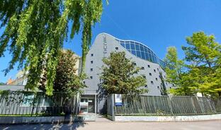
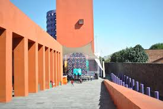

Sobre la Escuela
 La Escuela Free Art fue creada por María Belen Dreyssig actriz y cantante , formada en el Colegio Superior de las Artes del Teatro de Alejandra Boero , Canto y Comedia Musical. En el año 2017 como una Escuela Integral de Actuación . Poco a poco se fueron sumando las demás disciplinas artísticas. A Partir de 2019 se Incorporamos también Marketing digital , Inglés y Desarrollo Personal orientado a el Arte.
Castings
Espacio de Bolsa Laboral para artistas , Castings de Free Art y de otras productoras


Eventos
Disfruta de las más destacadas Masterclass y los mejores Shows
Masterclass Stanislavski